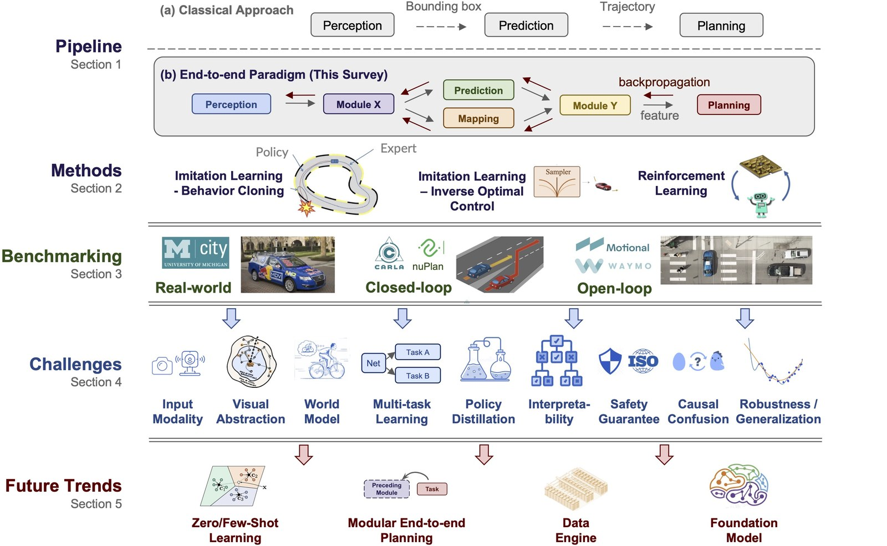
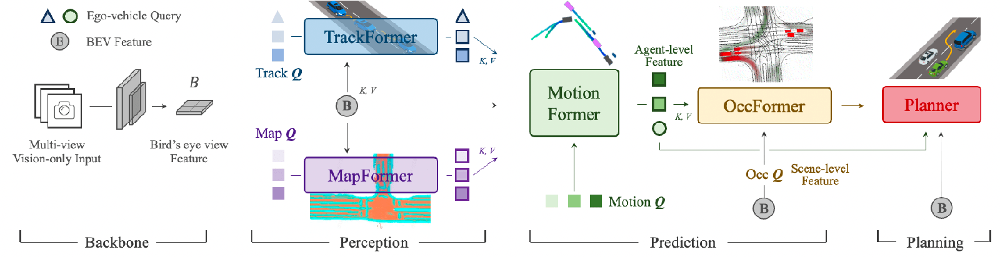
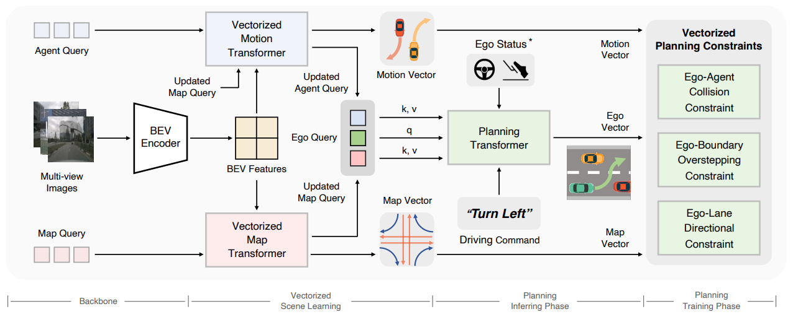
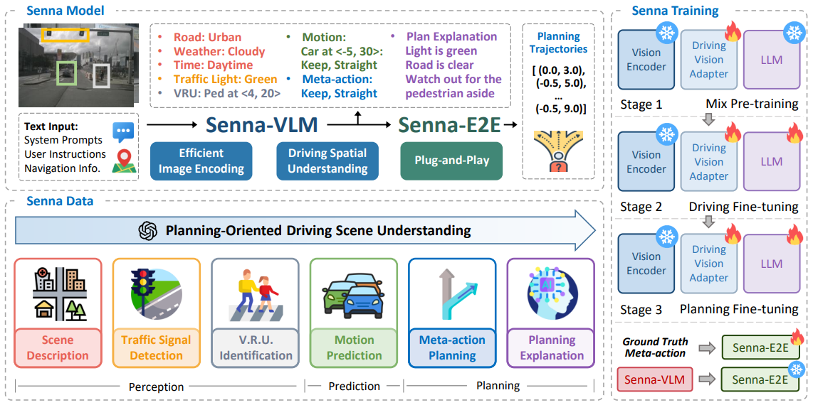
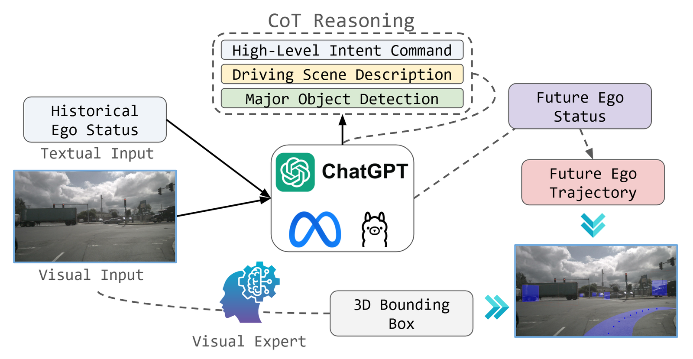
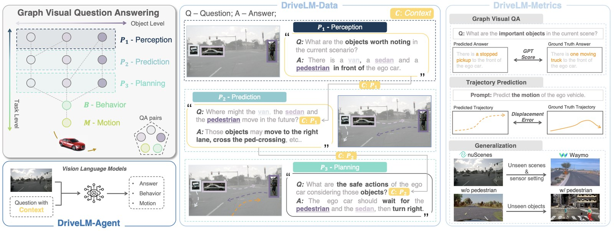
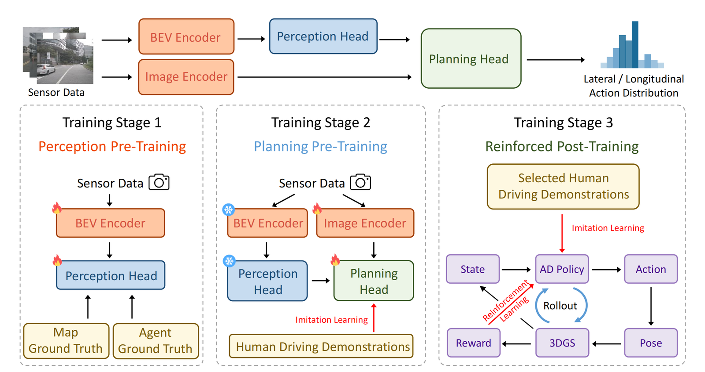
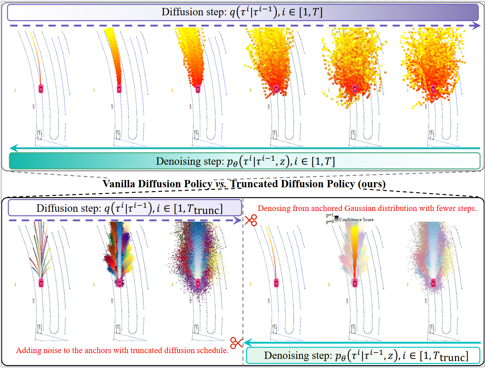

00全景与读法:三件被混为一谈的事
几乎所有「车上跑大模型」的讨论都在混用三个完全不同的东西,分不开就无法判断任何一条证据的含义。① 离线 VLM:自动标注、难例挖掘、字幕与思维链生成、仿真素材——这是语言今天真正创造价值的地方,而它从不碰车。② 车上的慢速语义分支:Waymo 的架构是两速的,Sensor Fusion Encoder 在快反应路径上融合相机、激光与毫米波,Driving VLM 负责可容忍更高延迟的罕见语义推理;研究界把同一模式写进标题——「Think at 5 Hz, Act at 20 Hz」。措辞要准:按 Waymo 自己的描述,快慢两路都馈入产出轨迹的 World Decoder,所以 VLM 是被移出快反应路径,不是被排除在控制路径之外(第 04 节详述本站在这一点上的更正)。③ 真正出控制量的策略:在每一个已出货的产品里,这都是非语言的轨迹头。特斯拉是「photons in → actions out」,网络里没有语言模型;小鹏 VLA 2.0 是视觉→隐式 token→动作;理想把 32B 的 VL 基座蒸馏到 3.2B 的车端模型;华为叫「世界行动模型」而非语言模型;Momenta R6 是一段式端到端加 RL,没有语言阶段。本篇此后每一节都在这三分法上定位。
每节固定三段:叙事怎么说(左栏,灰)——行业、厂商与论文摘要对这件事的讲法;证据是什么(右栏,橙)——一手仓库、文档、代码与标准文本核验出的机制与数字;本站判断(下方色块)——落差在哪、是什么性质的墙、对 RL-on-NPU 主线的含义。数字来源三分:第三方 独立核验或多方一致;自报 厂商或论文作者口径;推断 本站分析。方法学限定:本轮六路并行机制级调研共 123 条发现、124 条负面证据,随后每路取两条承重主张送对抗核验,共 12 条判决:9 条 partially_correct、3 条带 refuted 标记。核验改写了本篇三处主干论证——第 01 节的「算术与出货规格吻合」被推翻、第 02 节的消融定性被反转、第 04 节的两条引语被撤回,改法与依据见第 11 节;各节内凡标注「已按核验收窄」处即为改写后的口径。第 07、08、09 节的大部分里程数字、监管日期与中国厂商口径未逐条复核。

这张图怎么读
只看第 1 行与第 4 行,中间两行是文献组织。第 1 行 (a) 是经典级联 感知→预测→规划,模块间传结构化物体;(b) 是端到端,梯度可贯通全链路。本篇讨论的「大模型上车」在这张图上没有自己的格子——它是 (b) 的一个变体,把中间表示换成了词。第 4 行的九大挑战里有三项直接对应本篇后半:因果混淆(第 03 节 nuScenes 盲基线的机制)、安全保证(第 08 节 WCET 与形式化验证)、可解释性(第 02 节语言唯一站得住的那个用途)。值得注意的是这份综述成文于 2023 年——卡点在 LLM 进场之前就已经被点名了,后来者并没有把它们搬开,只是换了一套词重述。
叙事怎么说
「大模型具备常识与推理能力,把它放进车里就能处理长尾场景,这是通往 L4/L5 的路径。」VLA(vision-language-action)被普遍描述为端到端之后的下一代范式,语言作为统一的中间表示把感知与动作连起来。
证据是什么
三类用途的证据强度完全不同。① 离线用途:华为云端世界引擎、Waymo 用 Gemini 训练标注、NVIDIA Alpamayo 的 Chain-of-Causation 数据集(「人在环的混合自动标注」)——成立且在产业里真实运转。② 回路外语义通道:Waymo 官方架构表述、「Think at 5 Hz, Act at 20 Hz」——成立,但不闭合控制回路。③ 控制位:零个已出货产品在这里逐帧生成文本。
本站判断「大模型上车」这句话同时指涉三件事,而它们的证据等级依次递减到零。本篇此后的全部工作,就是把每一条流通的证据归到这三格中的一格——一旦归好,争议大部分自行消失:真正有分歧的只有第 ③ 格,而第 ③ 格目前是空的。

这张图怎么读
沿着横向主干从左到右走一遍,并留意每个箭头上传的是什么。多相机图像 → BEV 特征 → TrackFormer(跟踪)→ MapFormer(建图)→ MotionFormer(运动预测)→ OccFormer(占据)→ Planner(轨迹)。全部模块都是 query 化的 transformer,模块间传递的是嵌入向量与结构化物体,不是词。这张图是第 00 节第 ③ 类的典型形态;把它与第 04 节 Waymo 的自述并读会发现它们是同一个设计选择的学术版与工业版——Waymo 刻意保留「嵌入 + 结构化物体/路网」的混合表示「而非纯端到端,以保持系统可验证」,而可验证性正是第 08 节那堵结构墙的另一面。
01带宽算术:这是算术,不是工程欠债
batch=1 的自回归解码每出一个 token,都要把全部权重从 DRAM 读一遍,因此每 token 时间有硬下界:t_token = 参数量 × 每参数字节数 / 实际达到的带宽。车规 SoC 围绕 LPDDR5/5X 设计(受功耗、散热与 ASIL 约束),这个数卡在 200–280 GB/s:DRIVE Orin-X 204.8 GB/s(256-bit × 6400 MT/s LPDDR5);DRIVE AGX Thor 273 GB/s(256-bit × 8533 MT/s LPDDR5X)——这是开发者套件口径,NVIDIA 不公布车规量产 SKU 的带宽,「Thor-X」是中文市场简称而非 NVIDIA 型号;地平线 J6P 205 GB/s(<50 W,ASIL-D)第三方;蔚来 NX9031 546 GB/s(512-bit × 8533 MT/s 物理上成立,但来源是社交媒体帖)自报;特斯拉 AI4 约 384 GB/s(第三方拆解估算,特斯拉未公布)推断。对照:发表过最好的驾驶 VLA 加速结果实际跑在 RTX PRO 6000 上,1792 GB/s、600 W——是 Thor 带宽的 6.6 倍;H100 SXM 3350 GB/s,12.3 倍。
叙事怎么说
「车规芯片算力已经上千 TOPS,Thor 1000 TOPS、J6P 560 TOPS,足够跑一个几 B 的大模型;剩下的是软件优化与量化的问题,再过一两代就解决了。」TOPS 是车企发布会上最常被引用的能力指标。
证据是什么
TOPS 对这件事几乎不相关。盈亏平衡算术强度 = 峰值 TOPS / 带宽:Thor-X 是 1000e12 / 273e9 = 3663 ops/byte,而 batch-1 的 INT8 GEMV 每读一字节权重只做 2 次运算。解码用掉的是标称算力的 0.055%(J6P 0.073%、Orin-X 0.161%)推断。更要紧的是 NVIDIA 车规 TOPS 标的是 2:4 结构化稀疏——Jetson AGX Orin 的 275 稀疏 INT8 TOPS 对应 138 稠密,DRIVE Orin 的 254 同理;而 LLM 权重一般吃不了结构化稀疏,可用的稠密值大约是头条的一半。
本站判断(已按核验收窄)本站原先在这里有一个错误的论证,核验把它推翻了。 原稿把 40 ms 解码窗口除以「每帧 10 个 token」得到约 0.76B @INT8 的参数上限,再声称「已出货的系统恰好落在这条线上,吻合到 2 倍以内」。三处站不住:① 两个举例对象都错了——理想的 2.2B 是上一代「端到端+VLM」架构里的 VLM 慢系统,跑在第二颗 Orin-X 上给另一个系统提建议,它不出动作;实际出货的 MindVLA 车端模型是 3.2B(从 32B 云端 VL 基座蒸馏,另有 3.6B 口径);而 FIVE-VLA(641M)根本没有上车——A100 上约 30 fps、T4 上约 4 fps,是研究模型。② 真实出货高出上限约 4 倍,不是 2 倍——MindVLA 3.2B 是 4.19 倍,小鹏车端约 3B 是 3.92 倍;DeepRoute 自报车端 40B、单步 60–85 ms,是上限的 52 倍且处在同一自报证据层级。③ 「每帧 10 个 token」是不可观测的自由旋钮——同一算术在 Thor 上从 7.64B(1 tok)到 0.076B(100 tok),跨度 100 倍;反解各家出货规模所需预算是 1.79 / 2.55 / 2.61,旋钮不可观测,模型就能回溯任何数字,这个写法不可证伪。
核验留下的、本站现在采用的说法更锋利:在车规 DRAM 预算上每帧生成冗长自然语言是负担不起的——一个 100 ms 帧在 200–550 GB/s 的部件上只够一个数十亿参数模型做个位数次全权重读取。侧面证实它的是一个很硬的事实:每一家厂商公布的解法都是「停止每帧吐词」,而不是「把模型压小」——小鹏拆掉语言转译层,FIVE-VLA 完全绕开文本生成,理想靠小词表加投机推理加 token 并行解码换 >10 Hz,其设计目标明写「保证模型规模增长的同时,不降低端侧的推理效率」。厂商并没有收敛到 0.76–1.53B,他们上了 3–4B,然后把 token 的吐出从回路里工程掉了。参数上限没有生效;token 预算生效了。
外推一则:FlashDrive(CoRL 2026)把 Alpamayo-1.5-10B 从 717 ms 压到 151 ms(1.4 → 6.6 Hz),跑在 600 W 工作站 GPU 上;按带宽折算解码、按稠密算力折算其余阶段,10B VLA 在 Thor 上约 720 ms、Orin-X 上接近 2 s推断——两个方向的误差不互相抵消(非解码阶段用数据中心级耗时偏乐观,解码阶段假设无投机无 MoE 偏悲观);而按本站这组折算,Thor 上非解码阶段已达 424 ms,一个 100 ms 帧的解码预算是负的——这恰好说明那个 40 ms 窗口是假设,不是推导。

这张图怎么读
要看的是中间那层表示的「密度」:地图与他车都不是稠密栅格或占据体素,而是少量矢量化 query。这一个设计选择让推理代价塌了一个量级,而且塌的方式是关键——query 数是预先设定的,于是整帧的计算量与场景内容无关。把它和上面那个 formula 并读:非语言策略之所以能在 100 ms 里从容跑完,是因为它的表示本身就是为这个预算设计的;而自回归解码的开销与「要说多少个词」成正比,词数是数据相关的。这不只是「更快」与「更慢」的差别,而是「开销有界」与「开销取决于输入」的差别——第 08 节 WCET 那一节的全部张力,都在这张图与 LLM 解码的对比里。
02语言这一层买到了什么:按作者自己的说法,是持平
本节适用本站 D43/D44 反复用的那套方法学纪律——找同条件消融、找密封评测、警惕 harness 差异——而且这一轮它反过来把本站自己修了一次:原稿的小节标题是「接近零」,核验表明那个定性越过了证据能支撑的范围。最常被当作证据的对照是 SimLingo(Wayve + 图宾根,CVPR'25 Spotlight)。数字本身经核验全部对上(论文表 2,专家列为 PDM-Lite),但「这是最干净的受控消融」这个框架是错的。
| 条目 | Driving Score | Success Rate | 含语言 |
|---|---|---|---|
| SimLingo-Base / CarLLaVA(纯视觉,较小) | 85.94(无误差棒,单次运行) | 66.82 | 否 |
| SimLingo(完整 VLA:VQA / 解说 / 指令跟随) | 85.07 ± 0.95 | 67.27 ± 2.11 | 是 |
| 差值 | −0.87(不可度量) | +0.45 | — |
| TF++(2024,非语言 CNN/transformer)· 108 条中排 32 | 84.21 | 67.27 | 否 |
| BridgeDrive(LEAD)· 榜首 | 96.34 | 89.25(仅 README 口径) | 否 |
| TFv6 · 第二 | 95.28 | 86.81 | 否 |
| LinkVLA · 最好的 VLA 条目 | 91.01 | 74.55 | 是 |
| FIVE-VLA | 90.95 | 77.27 | 是 |
| BLUE | 90.58 | 76.18 | 是(带关闭门控) |
| PDM-Lite(特权专家,参照) | 97.02 | 92.27 | 否 |
| LEAD(特权专家,参照) | 96.78 | 96.59 | 否 |
| BridgeDrive · 同论文同架构,仅换专家数据 | 86.87 → 96.34(+9.47) | 72.27 → 89.25 | 否 |
叙事怎么说
「语言给了模型常识与推理,因此 VLA 能处理纯视觉端到端处理不了的长尾语义;思维链让决策可解释也更稳健。」每一篇驾驶 VLA 论文的引言基本都是这个结构。
证据是什么
基线对完整版不是受控消融。 论文附录 B.3 列出至少四处同时发生的改动:epoch 30 对 14;图像编码器 CLIP-ViT 对 InternViT-300M-448px;语言解码器是 50M 从零训练的 LLaMA 架构 transformer,对 InternVL2-1B 的预训练 Qwen2-0.5B-Instruct 加 LoRA(约 20 倍容量差,外加有无语言预训练之别);损失从 L2 改为 SmoothL1——而改损失的原因是加入 Action Dreaming 数据后训练不稳,所以「同一数据」也不成立。论文并明说没在新设置下重跑基线:「由于 CARLA Leaderboard 关闭与算力开销,我们没有重复 SimLingo-BASE 的实验」。基线那一行没有任何方差估计,所以 −0.87 甚至不能称为「落在噪声内」——它是无法被度量。
而论文里唯一真正受控的语言开关,方向与常见叙述相反。 表 10(附录 C.3,同一组权重、只切换推理模式、3 个种子):开思维链 85.07 ± 0.95 / 67.27 ± 2.11,关掉 84.41 ± 1.76 / 64.84 ± 2.42,即开思维链 +0.66 DS、+2.43 SR。论文原文:「我们看到把解说任务当作思维链时有小幅提升,因此将其设为默认模式;不过没有它性能也不会退化太多」——本站原稿只引了后半句,把方向引反了,此处更正。论文的局限性一节说得最准:思维链「尚未显示出统计显著的驾驶性能提升」。
更锋利、而且不依赖上述归因的是 BLUE(EMNLP'26)给出的机制:语言只在一小部分路线上起作用,而在那些路线上它「可能大幅改善,也可能大幅恶化」;BLUE 的贡献是一个 0.11M 参数的门控,负责在大多数帧把语言关掉,换来 2.54 倍提速。另一侧,「Less Language, More Latents」用不到 5% 的语言标注拿到 87.98 DS / 70.46% SR;CausalDriveBench 评了 10 个驾驶 VLA 与 3 个通用 VLM,发现因果问答准确率与轨迹准确率在模型间统计无关。
本站判断(已按核验收窄)这一节诚实的定性是作者自己给的那一个,写在表 2 的图注里:「我们要强调,SimLingo 能够在纳入若干语言相关能力的同时,保持与纯驾驶模型 SimLingo-BASE 相同的驾驶性能。」——持平,不是增益,也不是损失。两处标签更正:「纯视觉」在 SimLingo 语境里指只用相机感知,两个版本都是;基线是「无语言能力」,不是「无语言模型」(它有一个 50M 的 LLaMA 架构解码器)。一处资历归属:CARLA Leaderboard 2.0 挑战赛的成绩属于无语言的那条臂(表 1 脚注「我们把模型从 CarLLaVA 更名为 SimLingo-BASE」),完整版 SimLingo 从未在官方榜上评测过;基线在官方榜上的 DS 是 6.25(MAP)/ 6.87(SENSORS),与 Bench2Drive 的 85.94 差两个数量级,论文明确警告不可比。
闭环榜的排序成立,但归因不成立——这是本节最该带走的一条。 榜页自己写明「本榜比较的是整个方法的最终表现,包括数据获取方式,而不只是架构」;而决定性的对照就在同一页上:BridgeDrive 出现了两次,同一篇论文、同一个架构,86.87 与 96.34,差别只在专家与数据集——单靠数据获取方式就带来 +9.47 DS 的摆动,接近语言/非语言那个 4.3–5.4 分差距的两倍。而榜首两条都依赖 LEAD 数据,最好的 VLA 条目都不依赖。此外这个榜不独立于它的头部参赛者:维护方 autonomousvision / 图宾根组同时是 TFv6、LEAD、TF++ 与 SimLingo 的作者方,而每一行都是论文作者自报。榜内还有自相矛盾处:同仓库 main.tex 把 BridgeDrive(LEAD)的 SR 记作 86.81(与 TFv6 相同,像复制错误),与 README 的 89.25 不一致。语言/非语言这个切分是本站的编辑标注,榜上没有这一列;按名称标注会漏掉 VLADriver-RAG 89.12、AlignDrive 89.07、GraphPilot 88.89 等语言条件化候选——但它们也都没突破约 91,所以天花板的结论仍然成立。
合起来三条:① 在唯一一组同权重对照里,语言的收益正但不显著;② 作者自己的定性是持平;③ 至今没有任何闭环榜首是语言模型,最好的语言条目也没突破约 91,尽管这个差距的归因被数据获取方式严重混淆。所以:语言在驾驶闭环上至今没有被证明能买到驾驶能力,也没有被证明有害——它处在一个「花了很大代价、收益尚未可测」的位置。这比原稿的「接近零」弱,但这是证据的形状。

这张图怎么读
要看的不是模块,是那条分工线。Senna-VLM 产出的是结构化驾驶语义(路况、信号灯、弱势道路使用者、运动预测、meta-action 与规划解释),而轨迹由 Senna-E2E 出。顺着箭头看会发现语言的输出被降维成了离散的 meta-action才交给下游——这不是工程妥协,而是这条路线唯一能工作的接法:第 00 节第 ② 类位置。把它与第 05 节 MindDrive 的设计并读很有意思:MindDrive 让 RL只在有限离散的语言动作集上探索,而不是连续轨迹,正是靠同一个降维才让探索可行。整个领域在用不同的词、从不同的方向,收敛到这张图的形状。

这张图怎么读
看最右端输出的数据类型:路径点坐标以文本 token 编码,由 VLM 自回归生成,再解析回数值。这让第 01 节的算术变得具体——每一个航点都要花掉若干个 token 的解码时间,而航点数量与思维链长度都是数据相关的。于是这张图同时是本篇两堵墙的交点:它既撞带宽(第 01 节),又撞 WCET 有界(第 08 节)。必须同时记住的是对照事实:Waymo 自己那篇 EMMA 论文是纯研究——离线评测、无闭环、不接激光雷达与毫米波、坐标用文本编码、推理延迟从未被刻画。它常被引用为「Waymo 让 Gemini 开车」的证据,而它不是。
03让 VLM 驾驶看起来很行的那个指标,是可以空手刷的
这是本篇方法学上最该被记住的一节,也是本站 D43 第 8 节「等预算与密封评测」主题在另一个领域的完整重演。AD-MLP(百度,2023)只喂自车状态——历史轨迹、速度、加速度、高层指令——不接摄像头、不接激光雷达、没有任何感知,在 nuScenes 开环规划上是 SOTA。本站直读其仓库结果表:平均 L2 误差 0.29 m,对 VAD-Base 的 0.37、UniAD 的 1.03,其中 2s/3s 分项 0.26/0.41 为全表最优;README 还记录了一次修正——训练数据有误被外部指出后,平均 L2 从 0.23 改为 0.29、碰撞率从 0.12 改为 0.19。然后把它放进闭环:Driving Score 18.05,Success Rate 0.00%,除交通标志 4.35 外每一项多能力子分都是 0.00。
叙事怎么说
「我们的 VLA 在 nuScenes 开环规划上把平均 L2 误差降低了 X%,在 DriveLM 的驾驶问答上 GPT-score 提升了 Y 分,证明语言推理提升了驾驶能力。」这是 2023–2025 年驾驶 VLA 论文最常见的立论结构。
证据是什么
两个指标都可以空手刷。① 一个在 nuScenes 开环上领先的模型,一条闭环路线都跑不完——开环 L2 与闭环能力在这一对上是反相关的。机制由 BEV-Planner(NVIDIA + 南京大学,CVPR'24)给出:nuScenes 里 73.9% 是直线行驶,保持当前速度、方向或横摆率在多数时候就是正确答案。两家基准维护者现已白纸黑字:Bench2Drive 的 README 写着「作者应当停止报告 nuScenes 开环规划结果,审稿人不应当索要」;carla_garage 更直接——「如果你在 2025 年评审一篇仅凭 nuScenes 规划结果立论的论文,我们请你拒稿」。② 驾驶 VQA 那一侧塌得更彻底,见下表。
| 任务 | 给干净图 | 不给图 | 差 |
|---|---|---|---|
| planning | 75.75 | 73.21 | −2.54 |
| perception | 35.37 | 36.48 | +1.11(不给图反而更高) |
| behavior | 45.40 | 50.03 | +4.63(不给图反而更高) |
本站判断DriveBench 作者的结论是模型在「依据通用知识或文本线索生成看似合理的回答,而非真正的视觉接地」;DriveLM 自家微调的专才在去掉图片后也只从 68.71 掉到 65.24。指标本身还火上浇油:ROUGE-L 常年在 0.2 附近,而 DriveLM 在 ROUGE-L 上赢其它 VLM、在 GPT-score 上输——微调的增益很大程度是答案模板匹配;人类评分者在干净图的感知任务上只拿 47.67,说明这套基准自己的天花板都没标定好。
与此对照,NAVSIM 是本站见过最健康的基准设计实践:它把盲基线检查制度化进了 devkit。其 docs/agents.md 原文——「EgoStatusMLPAgent 是一个盲基线,它忽略所有感知环境的传感器……由此,EgoStatusMLP 充当一个性能上界,即仅靠外推自车的运动学状态所能达到的水平」。它在 navtest 上得 65.6 PDMS,而人类回放 94.8、匀速 21.6——人类成绩的约 70% 是闭着眼睛能拿到的,感知与推理一共只在 65.6 → 约 90 这一段里。而当前 navtest SOTA 不分架构都挤在 88–91:ResAD 用 ResNet-34、完全不带语言,88.8(换 V2-99 到 90.6);DAP 用 120M 参数的离散 token 规划器,90.0。基准已经饱和,且不区分语言与非语言。
最后值得记上一笔的是,AD-MLP 的作者把这件事说得比任何批评都狠——仓库 README 原文:「尽管我们的模型在 nuScenes 数据集的范围内表现良好,我们承认它只是一个无法在真实世界中工作的、不切实际的玩具;在自车状态之外没有任何感知知识的情况下驾驶是一个无法逾越的挑战。」AD-MLP 从来不是一个在吹的工作,它是一份诊断报告——而领域花了两年才开始照着它改评测。

这张图怎么读
左侧那张有向图是这条路线的核心主张:P1 感知 → P2 预测 → P3 规划 → B 行为 → M 运动,把驾驶决策拆成可问可答的因果链。设计本身是好的——它把「模型到底理解了什么」变成了可以逐环追问的东西。本站的保留意见全在右侧那一栏:评测用的是 GPT Score 与位移误差,而上面那张 DriveBench 表显示这类问题相当大一部分不看图也能答对。于是因果链的「因果」二字缺少独立检验——一个模型可以在这张图的每一环上都给出得分很高的回答,而全程没有看图。要补上这道检验,需要的恰恰是第 06 节讨论的那个至今无人公布的量。
04产业的自答:三家都把语言移出了出控制量的那条路径
比任何论文都有说服力的,是手里有最多车、最多算力的那几家自己做了什么。本节全部内容为厂商公开口径自报,经搜索摘要读取(厂商站点在本环境被代理拦截)。本节是核验改动最大的一节:两条广为流传的引语被判定无法归属,已撤回;一处架构描述被降级为自媒体转述。
一、「VLA 太大太慢了」不可归属于华为 IAS BU CEO 靳玉志。 本站原稿把这句连同「无法有效处理空间信息」「投机取巧」作为其公开表述引用。核验查明:这组说法唯一可定位的出处是一个知乎回答,其将之归于「华为的人」在 B 站采访中的说法——匿名员工在用户生成问答站上的转述,不是 BU CEO 的在录表述;且靳玉志说的是「看似取巧」,与「投机取巧」语气不同。本站此后不再以靳玉志名义引用这句。同样,「没有语言层,没有思维链」「MoE 路由」「四路传感器输入」「1/5 的算力」这组架构描述来源均为中文汽车自媒体的科普/专栏文章,不是华为文本也不是靳玉志的话,本篇将其降级为第三层级转述。
二、「视觉语言模型擅长高层推理,但对实时控制而言太慢,且单独使用时空间感知不足」无法在 Waymo 文本中定位。 本站原稿将其作为 Waymo 架构文章原文引用,此处撤回该引语。Waymo 关于校验层的那句则是一手确认的,见下。
叙事怎么说
「VLA 是行业共识的下一代技术路线。」2025–2026 年中国新势力的发布会密集使用 VLA 一词,小鹏被普遍描述为 VLA 路线的旗手;「Gemini 上车了」「大模型在开车了」是流通最广的两句话。
证据是什么
小鹏——第二代拆掉了「语言转译」这一段。 VLA 2.0 是 视觉 → 隐式 token → 动作,官方表述是三段式的 视觉识别→语言转译→动作生成 存在信息损耗与延迟,其框架是语言是对物理世界的一种「高度有损的压缩」;定性从「思考后行动」改为「直觉式反应 / 看到即做到」。核验收窄三处:①「把语言层删了」过头了——删掉的是实时路径上解码为文本的那一段,不是语言;语言仍作为并行/辅助输入流保留(路牌文字、手势),车端仍是语言预训练的多模态 Transformer,产品仍叫 VLA,监督仍由 72B 语言预训练云端模型蒸馏而来。准确说法:这不是无 LLM 的控制路径,而是无「解码成文本」的控制路径。②「从约 200 ms 降到 <80 ms」的起点没有一手来源——200 ms 只是媒体对「传统架构」的泛述,只有 <80 ms 这个厂商数字存在,降幅本站不再引用。③ 2,250 TOPS 是三颗芯片的平台合计(3 × 约 750 TOPS「有效算力」,小鹏自定义的利用率折算指标),所读来源均未声明精度;「1 颗顶 10 颗 Orin-X」是把自家利用率假设套到竞品上得到的,按标称 INT8 算约 3 倍。
华为——明确不走 VLA 路线。 可确认部分(2025-08-28,多家独立中文媒体口径一致):IAS BU CEO 靳玉志表示华为不走 VLA,更看重 WA(World Action)。而他给出的理由是认识论层面的,不是延迟或体积:VLA 路线靠语言模型学习网络知识,「这样的路径看似取巧,其实并不是走向真正自动驾驶的路径」,而 WA 是「直接通过 vision 这样的信息输入实现控车的大模型……无需把各种各样的信息转成语言」。ADS 4 的 WEWA 架构端到端延迟较上一代降低 50% 为厂商自报。
Waymo——把 VLM 放在慢分支,而不是放在控制路径之外。 按 Waymo 自己的描述:Sensor Fusion Encoder 融合相机、激光与毫米波并产出物体、语义与丰富嵌入;Driving VLM 用相机数据、以 Waymo 驾驶数据微调、由 Gemini 训练;两者都馈入 World Decoder,而 World Decoder 预测他车行为、产出高精地图、生成本车轨迹以及用于轨迹校验的信号。准确说法:VLM 被移出快反应路径、处理罕见与新奇的语义场景,而产出轨迹的 World Decoder 同时消费快慢两路——这是两速分工,不是排除。校验层存在且是一手确认的:Waymo 2025-12 原文为「一个独立而严格的车载校验层,随后验证由 Driver 的生成式 ML 模型所产出的轨迹」;但 Waymo 对它的描述是「一个独立的、基于 AI 的安全系统」,引入强化学习与受生成式 AI 启发的推理,对照硬性物理约束与交通法规检查规划,「充当硬性兜底」——所以它不是规则检查器;被分离出来的是校验这一层,不是一个独立的非学习式裁决者。Waymo 刻意保留「嵌入 + 结构化物体/路网」的混合表示「而非纯端到端,以保持系统可验证」;教师模型「大到无法在车上运行」,经蒸馏成学生模型。
而 EMMA——Waymo 真正那篇「Gemini 上车」的论文——是纯研究:离线评测、无闭环、不接激光雷达与毫米波、坐标用文本编码、推理延迟从未被刻画。Gemini 确实在 2026 年上了 Waymo 的车——在座舱里,当乘客助手。
本站判断(已按核验收窄)三家的理由并不是同一套——小鹏讲有损压缩与延迟,华为讲「看似取巧」的认识论,Waymo 讲实时性与可验证性;而且这是一场尚未定论的分歧,而非共识:中文行业媒体的概括是「小鹏、理想向左,华为向右」,理想在 MindVLA 里保留了语言。能站住的收窄结论是:在三家各自的架构里,语言都被移出了逐帧产出控制量的那条路径——小鹏移出了文本解码,华为不引入语言转换,Waymo 把它放到慢分支。它们是在自己的钱和自己的事故责任上做的这个选择,这一点仍然比任何单篇论文的消融更有分量;但没有任何一家公布了闭环或延迟的第三方测量,所以这是「三家的工程选择一致」,不是「三家证明了语言无用」。
05RL:真正可验证的那个奖励,是「到某条被记录的人类轨迹的距离」
驾驶在 2026 年确实变成了一个 RL-on-verifiable-reward 的领域——但可验证的那个东西,本质是带排序步骤的模仿学习。最清楚的一手物证是 NVIDIA 自家的配方 README(本站直读 NVlabs/alpamayo-recipes),它逐字就是 LLM 的那套 RL 栈:GRPO(直接引用 DeepSeekMath, arXiv:2402.03300)、Cosmos-RL 把训练的策略副本(FSDP)与生成的 rollout 副本(vLLM 引擎)分开、控制器负责派发 rollout 与权重同步。
叙事怎么说
「驾驶也有可验证奖励了——碰撞、违规、舒适度都是客观可判的,所以 RLVR 那套在 LLM 上奏效的方法可以搬过来,让策略超越人类示范。」世界模型则被描述为提供无限的闭环训练与评测环境。
证据是什么
「验证器」就是人类司机被记录下来的那个未来。 它在 SFT 模型已能产出的样本里重排序,无法发现任何没有人类开过的机动,也没有任何反事实伤害的概念。NVIDIA 自己把这个演示奖励限定为「只给 rollout 的轨迹部分打分」。但本站原稿说「推理奖励并未释出」,这是错的,此处更正:NVIDIA 在当前 main 上确实发布了 rewards/aggregated_reward_with_reasoning.py(给思维链打分并加第二道闸门 reasoning_threshold = -0.4)、配套 TOML(reasoning_weight = 0.3、reasoning_grader_type = "lingo_judge")、独立入口脚本、可继承的 BaseReasoningGrader,以及已释出的推理标签。那句限定只针对默认演示奖励,不针对整个发布;README 自身不一致——FAQ 还写着「将很快释出」。不过这条更正不削弱本节要点,反而确证了它:实际发布的推理评分器就是 Lingo-Judge——一个微调过的序列分类器。另两处精确化:3.0 m 闸门是硬编码字面量,不是可配置项(只有权重来自 TOML);而「钳到 −1」不够准——按发布权重(traj_l2_weight 0.4、comfort_weight 0.1,舒适度分在 [−1, 0]),闸门内奖励区间约 [−0.5, 0],所以 −1 是一道落在整个闸门内区间之下的不连续悬崖,不是连续函数的下界。
而最该被记住的一条藏在 FAQ 里,它经核验是逐字成立的:被 RL 后训练的是 VLM 骨干(ReasoningVLA 路径的离散动作 token 变体);而「动作专家头(基于流匹配的连续动作)不由这条 RL 管线训练」,针对动作专家路径的 RL「将在未来版本中提供」。核验还补了更硬的物证:导出的 checkpoint「只包含 VLM 骨干权重」,若拿它去走动作专家路径,「动作专家权重将是随机初始化的」。配方里也没有任何一种驾驶能力证据。
第三方闭环榜上的负面数据是决定性的:所有 RL-on-VLA 条目都远低于从特权规则专家蒸馏来的朴素模仿方法——IRL-VLA-RL 55.36、DriveDPO 62.02、Raw2Drive 71.36、MindDrive 78.04、AutoVLA 78.84,对 TFv6 95.28 与 BridgeDrive 96.34。更刺的一条:Orion-Lite 在推理时把 LLM 和文本提示删掉、只把教师的规划 token 表示蒸馏进一个轻量 transformer,得 80.57,高于 ORION-7B 的 77.74。
本站判断那条 FAQ 的含义值得单独说一遍:在一家最有动机把语言推上控制位的公司的公开配方里,RL 优化的是那个说话的部分,真正输出连续控制量的那个头被绕过去了。 这把第 00 节的三分法在代码仓库层面又验证了一遍。同样要紧的是那个替换的性质——连「推理对不对」这件事,奖励也是一个学出来的模型说的,不是一个可执行的检查器:这与本站 D43 第 4 节那张「奖励接地四档表」对上了,而驾驶落在最弱的一档。
公允地说,存在一个设计更聪明的在线 RL 存在性证明:小米 EV / 华科的 MindDrive(ECCV 2026)——一个 Qwen 骨干(0.5B / 2.5–3B)配两组 LoRA,决策专家出离散的语言化 meta-action,动作专家把它映射成 VAE+GRU 航点,用 PPO 在真实 CARLA rollout 的稀疏成败回报上优化。诀窍是让 RL 在有限离散的语言动作集上探索,而不是连续轨迹,这才让探索可行(DS 78.04 @0.5B / 80.59 @3B)。核验确认环境是 CARLA 0.9.15、评测是 Bench2Drive 闭环、仓库里没有任何东西碰到车,但收窄两处:「在线」是算子驱动的批式 on-policy PPO,不是持续学习的车(释出脚本是两次手动调用:先把 rollout 收集到磁盘,再喂给 PPO);而那条「性能随 RL 轮数非单调」的消融不在官方 README 里,只见于第三方论文笔记(其文本经机器比对与论文原文吻合),具体是 rollout 轮数超过 2 时 DS 从 78.04 掉到 73.69,作者归因于灾难性遗忘。所以准确的说法是「超过调好的那个最优点之后更多 RL 会变差」,不是「RL 净有害」。

这张图怎么读
前两阶段(感知预训练、规划预训练)是常规的,要看的是第三阶段那个闭环:State → AD Policy → Action → Pose → 3DGS → Reward。顺着这个环走一圈就会发现关键依赖——奖励来自一个三维高斯泼溅重建出来的环境。这把本节与下一节的核心问题画成了一张图:RL 的奖励有多可信,完全取决于那个重建环境有多可信。而这个环上没有任何一处连回真实世界做校准:整个闭环在重建空间里自足。要给这个环定价,需要的就是下一节那个至今无人公布的量。
06世界模型:三种用法被混为一谈,缺的是那个没人公布的数
叙事怎么说
「世界模型提供了无限的、可控的闭环环境,解决了自动驾驶的数据与评测瓶颈;在世界模型里做闭环 RL,策略可以在仿真里学到真实世界里罕见的长尾场景。」
证据是什么
规格最完整的一个是小鹏的 X-World(WAN 2.2 5B DiT、3D 因果 VAE、七相机动作条件生成、adaLN-Zero 注入速度/曲率/俯仰、两阶段蒸馏到 4 步去噪配流式 KV cache),小鹏称其已进入闭环仿真、在线 RL 与数据合成的生产流程自报。但论文给的是定性演示——24 秒多相机 rollout 不崩——没有公开基准表、没有可复现协议、没有代码、没有权重、没有数据。Wayve 的 GAIA 线与 Waymo 的世界模型是同一形状的主张;本站能读到的第三方说明直白地写着:GAIA 带来的闭环策略改进「在演讲里被宣称,没有在公开论文里被测量」。
而让学习出来的仿真器可用作评测器的那个量——仿真与真实的排序相关性——在驾驶领域无处可查。 在机器人领域它被发表过,结果是:从 ρ=0.40(SIMPLER 评 2026 年的 VLA)、ρ=0.61(GigaWorld)到 r=0.94–0.99(WorldEval、RoboWorld)第三方。
本站判断机器人领域那个 ρ=0.40 到 r=0.99 的跨度就是全部结论:这个方法不自带可靠性保证——同一类技术,在不同实现上既可能几乎无预测力,也可能近乎完美。在驾驶上这个数一次都没被公布过,因此「在世界模型里做闭环 RL」的所有增益目前都无法被定价。把这一节与第 09 节华为那 6 亿公里自家仿真并读,问题就很具体了:难例由自家世界引擎生成、再对着自家仿真器报告改进,这正是本站 D43 反复点名的训练集污染失效模式。

这张图怎么读
常见的一种为语言辩护的说法是:只有语言模型才能表达「有几种选择、各自的理由是什么」。这张图是对该说法最干净的反例,要看的是两个数:多模态来自锚定的高斯先验(候选数预先设定),去噪只做两步(截断扩散)。于是它一次前向并行产出多条候选轨迹再打分——步数固定、与输入内容无关、可并行。把它放到第 08 节的框架里看才知道这意味着什么:它在表达了多模态与择优的同时保住了最坏执行时间有界这个认证前提;而自回归生成要同样的表达力,就得把这个前提交出去。「要可解释的多方案决策」与「要硬实时可认证」并不矛盾——矛盾的只是用自回归语言去实现它。
07L4 的真实账本:谁在跑、靠什么、要多少里程
定义先行,因为定义本身就做掉了一半的工作。 核验直读了 J3016_202104 全文,结论比本站原稿精确一些:L3→L4 的分界主要在于谁来做动态驾驶任务的回退,而标准把它称为一项能力——§5.5 注 1:「L4 的 ADS 有能力自动执行 DDT 回退,并在用户未恢复执行 DDT 时达成最小风险状态。这项自动 DDT 回退与最小风险状态达成能力,是 L4 与 L3 的 ADS 特性之间的主要差异。」§3.12 注 1 并指出「DDT 与 DDT 回退是不同的功能,具备其一并不必然意味着具备其二」。所以本站原稿「不是能力问题」这个说法要撤回:它确实是一项被追加的机器能力,只不过不是「在 ODD 内把车开好」那种能力。
核验还补了三条原稿漏掉的 L3/L4 差别,每一条都加重而非减轻结论:① L3 的定义范围比「全部 DDT」更窄——§5.4 的措辞是 ADS 执行全部 DDT「在例行/正常运行下」,而 §3.26 把例行/正常运行定义为「在其规定的 ODD 内(若有),且无 DDT 性能相关的系统失效正在发生」;失效工况因此落在 L3 的定义范围之外、落在 L4 之内。② L3 的用户还得兜住 ADS 不监控的那些车辆失效——§5.4 注 3:用户需对「车辆系统中明显的、DDT 性能相关的系统失效保持接受状态,而这些失效未必会触发 ADS 发出的干预请求,例如车身或悬架部件断裂」。③ 边界是「保证覆盖」,不是「具备能力」——§3.12 注 2:一个 L3 特性可以在某些情形下达成最小风险状态,「但在其他情形下不能……它无法保证在其 ODD 内的所有情况下都自动达成最小风险状态」。
而 L5 与 L4 只差一个比特——有没有预先规定的 ODD。所以「LLM 够不够 L4」实际问的是最小风险状态在失效工况下的可达性与失效模式覆盖,不是驾驶技巧;而「够不够 L5」问的是无界域的可验证性。
叙事怎么说
「L4 还没实现,是因为长尾场景处理不好;大模型的常识能力正好补这一块,规模上去了长尾就解决了。」以及「我们的系统行驶了 N 亿公里,安全性是人类的 M 倍。」
证据是什么
L4 已经在跑,而且没有任何一家已部署的 L4 运营商把语言模型放进控制回路。 Waymo 截至 2026-03-31 累计无人驾驶载客 2.206 亿英里(凤凰城 8060 万、湾区 6710 万、洛杉矶 5180 万、奥斯汀 1580 万、亚特兰大 540 万),约 3,871–4,000 辆车,每周超 50 万次付费行程,到 2026-09 覆盖 15 个美国都会区;萝卜快跑 22 城、每周超 25 万单;小马智行 1,975 辆(2026-06-30),其第七代车载平台 1,016 TOPS,跑的是世界模型而非 LLM;文远知行约 1,800 辆机器人出租车。Autoware/TIER IV 是唯一拿到监管许可的开源 L4(日本,付费巴士,固定线路)——而它是模块化栈。
中国这边的教训更直接:L4 是靠「减少通用性」拿到的——地理围栏 + 高精地图 + 远程接管 + 精选车队,不是靠加语言模型;而且至今财务上仍然吃力:文远知行 2025 财年营收 6.85 亿元、净亏 17 亿元;小马智行营收约 9000 万美元、净亏 7680 万美元。
本站判断把 RAND 的表和 Waymo 的头条并读,量级立刻清楚:Waymo 在 2.206 亿英里上的重伤头条,实际建立在 47 起绝对意义上被避免的事故上;其中仅 5670 万英里经过同行评审(任何伤害降低 79%,95% CI 71–85%),而且作者只有 Waymo 自己,人类基准是建模出来的(县级行驶里程、地理加权、32% 漏报膨胀、两侧都排除高速)。加州 DMV 的脱离报告不能替代——DMV 自己声明它「无意用于公司间比较」。
扩大规模能解决长尾吗?目前的证据说不能。 Waymo 自家的 IsoFLOP 研究(44.7 万小时、5.41 亿样本、84 个模型)得出 N_opt ∝ C0.63、D_opt ∝ C0.44,且在同等算力下这些运动模型比语言模型小约 50 倍;但作者自己写明「算力跨度不足以确立开环或闭环的幂律」。别处的结果更冷:一篇工作发现开环有幂律而闭环没有;NVIDIA 的研究发现开环 FDE 以约 −0.40 的指数改善,而闭环的平均无失效里程在约 256 小时处饱和;Alpamayo 从 10B 到 34B(8 万→11.5 万小时),minADE 从 0.916 m 动到 0.911 m,在误差棒内。特斯拉则公开把「约 10 倍参数」的模型从 v14 推迟到 v15,理由是小模型改进得更快。
08可认证性:这才是结构墙
前面几节的约束,至少方向上是工程问题。这一节的不是。
叙事怎么说
「安全认证是流程问题,等技术成熟了标准会跟上;ISO 8800 已经专门为 AI 制定,第一张证书也发出来了,说明路径是通的。」
证据是什么
ASIL-D 要求最坏执行时间(WCET)有界。 自回归解码的 token 数是数据相关的,而投机解码按构造让延迟变成随机的——这恰好是认证体系禁止的性质。一篇系统性综述调查了 AI 加速器的安全工作,发现没有一项给出 WCET 分析。
形式化验证在驾驶策略上确实有效,但只在 5,152–101,888 个 ReLU 神经元的规模上,因为界传播的代价随网络规模增长;一个 10B 的 VLM 比这个尺度大 5–6 个数量级。
标准本身假设失效模式是可枚举的。 ISO/PAS 8800:2024 是个框架,对机器学习没有 ASIL 映射;世界上第一张依其颁发的证书(吉利,SGS-TÜV 萨尔,2025-08)认证的是安全流程,不是某个策略的行为。
2026 年的监管走向把这一点坐实了。 UNECE WP.29 于 2026-06-24 通过首个全球 ADS 法规与 GTR(美、中、欧、日、加、英支持),要求:经审计的安全管理体系、可信测试(含满足可信性准则的虚拟工具链)、一份论证「无不合理风险」的结构化安全论证,以及持续的在役监测与报告。
本站判断UNECE 那份 GTR 走的是过程与证据路线,不是里程路线——而这恰恰是一个随机、不可复现的生成式策略最难论证的地方:安全论证要求你说清「为什么不会出现未预期行为」,而自回归采样的回答只能是统计性的。中国侧的证据同向:首批 L3 生产准入 2025-12-15 落地,窄到不可思议——长安深蓝与北汽极狐两款,限定在点名的路段(如重庆内环高滩岩立交—赖家桥立交),车企明说存量 L2 车辆无法升级;GB 44721-2026 带统一的 L3/L4 测试场景框架,2027-07-01 生效;GB 47955-2026(组合驾驶辅助安全要求)2026-06-27 发布、2027-01-01 生效,定义上就要求驾驶员持续观察并保持控制。没有任何乘用车 L4 型式批准存在。
而小米 SU7 致死事故(2025-03-29,116 km/h 下使用 NOA)之后,工信部 2025-04-16 的闭门会直接禁用「自动驾驶」「智驾」等宣传用语、禁止以用户做公测、把涉安全的 OTA 纳入召回级审批;小米随后于 2025-09-19 召回 116,887 辆 SU7 标准版,原因是 L2 高速 NOA 在极端场景下「识别、预警或处置不足」。监管方对这类系统的既有认知就是:驾驶员监督、OTA 受控、宣传受限——这是任何「车上大模型」方案必须从中起步的制度现实。
09中国与昇腾:车端 NPU 和数据中心 NPU 是两个世界,华为是唯一例外
这一节是本站的主场,结论对读者判断「国产栈能不能承接」最直接。
CUDA 世界 / 数据中心栈的默认做法
动态形状、kernel 语言(CUDA / Triton / AscendC)、KV cache、集合通信、算子可自定义、PyTorch 即时执行与编译自由切换。LLM 推理栈(vLLM / SGLang)全部建立在这些前提上。
车端 NPU 的现状
地平线的流程(本站直读 D-Robotics 文档):ONNX 进 → hb_mapper/horizon_nn/HMCT → hbdk-cc → 一个闭源的 .bin/.hbm,内含「针对特定 BPU 架构的二进制指令与权重数据」,用 --march bayes-e/nash-e 指定;horizon_plugin_pytorch 提供 qint8/qint16 的 PyTorch QAT,但 int16 仅 BAYES/BAYES_E 及之后支持,且不支持权重的 int16 量化;ONNX 导出明确「不支持 onnx run」(仅供可视化);不支持非 4D 的模型输入;任何 C×H×W > 8192 的算子回落 CPU;Softmax 经常落在 CPU 上。
本站判断这是一个 AOT、定形状、没有 kernel 语言的世界,与 CANN/AscendC(2025-08-05 开源,给你 kernel 语言、动态形状、KV cache 与集合通信)正好相反。单是「不支持非 4D 输入」这一条,就对 LLM 的 [batch, seq] 张量充满敌意——它不是性能问题,是表达力问题。
华为是唯一的真收敛案例。 昇腾 610(车载,7nm,>50 亿晶体管,10 个达芬奇核、每核 4096 MAC、3D CUBE,200 TOPS INT8 / 100 TFLOPS FP16,位于 MDC 之下)与数据中心的昇腾 910 线共享达芬奇核与 CUBE 原语;而昇腾云侧的自动驾驶训练路径本身就是这套 LLM 栈——DrivingSDK / mx_driving 构建在 CANN + torch_npu 之上,对 PyTorch 2.1.0/2.6.0/2.7.1/2.8.0,编译 DeformableConv2d、MultiScaleDeformableAttn 这类自动驾驶专用算子。这是国产栈在自动驾驶方向上唯一一条「训练与部署同族」的路径。
但规模宣称全是自报,而且方法上站不住。 华为的安全头条——「严重碰撞平均安全里程为人类的 3.58 倍或约 4.9 倍」、「避免 447.9 万次碰撞」、累计 100 亿公里(2026-04-19)升至 128 亿——全部厂商自定义自报。「避免的碰撞」是一个无法证伪的反事实计数,无第三方审计;而「重大事故间隔里程」的对比,是拿一支高价、以高速路为主、车龄新、车主富裕的车队去比全中国驾驶员均值——这是选择偏差,不是等暴露对比。
评测的 harness 敏感性在这里肉眼可见:P3 中国 2026-05 的评测把华为 ADS 4.1 排第一(4.46)、小鹏 VLA 2.0 第二(4.33)、理想 AD Max 第三(4.06);懂车帝的测试却把特斯拉 Model 3/X 排一二、华为系列在其下。同样的车,不同的 harness,排序反转——而中国至今没有任何密封的、第三方执行的、留出的驾驶基准,于是没有等预算对比,也没有污染控制。本站因此不列任何中国厂商间的能力排名。
10总表:三堵墙的性质
对 L4:可达,而且已经被达到了——但达成它的架构,是把一个确定性的、蒸馏过的、远小于语言模型的策略放在控制位上,把 VLM 移出快反应路径,再在生成轨迹与执行之间加一层独立的校验层(按 Waymo 自己的描述,这一层也是学出来的,作硬性兜底)。 一个车载 LLM 作为「真正开车的那个东西」,不在这条路上。
| 墙 | 性质 | 依据 |
|---|---|---|
| 车端带宽与延迟 | 工程问题,正在被解决;且约束的是每帧吐词数,不是参数量 | AI5 称 144 GB / 约 5× 带宽;NX9031 称 546 GB/s;厂商实际出货 3–4B 并把 token 吐出工程掉(小词表 / 投机 / 并行解码 / MoE) |
| 语言买不到驾驶能力 | 经验问题,目前未被证明(既未证实也未证伪) | SimLingo 唯一同权重开关 +0.66 DS 但不显著,作者定性为「持平」;闭环榜首非语言但归因被数据获取方式混淆(同架构换专家 +9.47 DS);驾驶 VQA 不看图也能答 |
| 自回归生成 vs 硬实时期限 | 结构问题 | ASIL-D 要求 WCET 有界;token 数数据相关;投机解码按构造随机 |
| 随机策略的可验证性 | 结构问题 | 形式化验证上限约 10⁵ 神经元,10B 模型差 5–6 个数量级;ISO 8800 无 ML 的 ASIL 映射 |
| 长尾的统计证明 | 结构问题 | RAND:2.75 亿英里证致死率、110 亿英里证改善 20%;闭环 MDBF 在约 256 小时饱和 |
本站判断对 L5:它不被上面任何一条阻挡,它被定义阻挡。 L5 意味着没有 ODD,而在用的每一件认证工具——ISO 34503 的 ODD、UN R157、UL 4600 的安全论证、2026 年的 UNECE GTR——都建立在「把 ODD 框起来」之上。无界域没有有限场景集、没有安全论证、也没有在役监测方案。这不是工程积压,这是结构性的。连 carla_garage 的维护者都把话说得很明白:今天的科学「足以支撑 L4 的部署」,而「实现 L5 自动驾驶将需要根本性的科学进步」。
那语言在哪儿有用? 三个地方,而且都真实:离线自动标注与难例挖掘;车上作为慢速、回路外的语义监督者,盖住罕见的长尾语义(Waymo 的「车辆起火→改道」);以及教师侧的推理与数据合成。它买的是可解释性与监督接口,不是驾驶能力。
一、驾驶 RL 的奖励问题比 LLM 的更糟,而且 RL 还没碰到控制量。 NVIDIA 的公开配方把 GRPO 那套(640 卡、全局批 2560、组大小 12)原样搬了过来,但可验证的奖励退化成「到人类日志轨迹的 L2 距离 + 舒适度」,它只能在模型已有的样本里重排序,无法发现没有人开过的机动;而真正发布的推理奖励用的是 Lingo-Judge——一个学出来的分类器,不是可执行的检查器;更要紧的是配方自己声明被 RL 优化的是 VLM 骨干,流匹配的动作专家头不在这条管线里,导出的 checkpoint 只含 VLM 骨干权重。当下「驾驶 RL」的进展,基本等价于「让模型把人类轨迹说得更准」。
二、世界模型当评测器,缺的是那个没人公布的数。 仿真与真实的排序相关性在驾驶领域无处可查;机器人领域公布过的范围是 ρ=0.40 到 r=0.99。在这个数公布之前,「在世界模型里做闭环 RL」的所有增益都无法被定价。
三、车端 NPU 不会自动继承数据中心 NPU 的生态,唯一的例外是华为——昇腾 610 与 910 共享达芬奇核与 CUBE,而云侧训练路径就是 CANN + torch_npu。这是国产栈在自动驾驶方向上唯一一条「训练与部署同族」的路径,也是本站此后应当盯住的那条线。
11未能核实的 · 判断与下一步
- 对抗核验跑完了,而且它改写了本篇三处主干论证。 六路调研每路取两条承重主张送核验,共 12 条判决:9 条 partially_correct、3 条带 refuted 标记。被改写的三处是:① 第 01 节——「算术预测的参数量与实际出货吻合到 2 倍以内」被推翻(两个举例对象都不是出货的车端 VLA;真实出货高出上限约 4 倍;「每帧 10 token」是不可观测的自由旋钮);本站改用核验留下的、更强的说法:参数上限没有生效,token 预算生效了。② 第 02 节——SimLingo 基线对完整版不是受控消融(论文附录 B.3 列出四处同时改动,且作者明说未在新设置下重跑基线),而论文唯一同权重的语言开关方向为正(+0.66 DS / +2.43 SR,不显著);原稿只引了「关掉思维链无明显退化」的半句,把方向引反了,小节定性已从「接近零」改为「按作者自己的说法是持平」。③ 第 04 节——「VLA 太大太慢了」等一组说法无法归属于靳玉志,已撤回;Waymo 那句「对实时控制太慢」的引语在 Waymo 文本中无法定位,已撤回;「把 VLM 排除在实时控制之外」收窄为「移出快反应路径,World Decoder 仍同时消费快慢两路」;车载校验层本身是学出来的,不是规则检查器。另有若干收窄已就地写入各节(J3016 的 L3/L4 差别是一项追加能力;Alpamayo 的推理奖励其实已发布,原稿说「未释出」是错的;3.0 m 闸门是硬编码;MindDrive 的非单调消融不在官方 README 里)。本篇结论未变,但支撑它的依据已经换过一轮——这正是核验该起的作用。
- 仍未经对抗核验的部分:每路只取两条主张送核验,因此第 07、08、09 节的大部分里程数字、监管日期与中国厂商口径未逐条复核;以过往经验,核验通常会收窄其中一到两成。引用前请以此为准。
- 小鹏车端模型规模的那处矛盾已被核验解开,但解开的方式是「两个数都站不太稳」。 两个流通数字属于不同时点与不同配置档:约 3B 一说对应 2025-11 的第二代 VLA 发布,而核验查明它只出现在小鹏用户论坛的措辞里,不见于官方文本——官方用词只是「数十亿参数」;7B 一说对应 2026-09-22 的 XOS 6.3.0 OTA(「端侧模型参数量提升 3.5 倍」),而核验未能在任何可索引页面上定位「70 亿级稠密参数」这一精确表述,独立媒体一致携带的只有相对口径,且「稠密」与否无法证实。此外该次 OTA 实际分三条交付线(三颗图灵芯片的 Ultra/Ultra SE 走 VLA 2.0;单图灵的 Max 走蒸馏的 VLA 2.0 Lite;双 Orin-X 车型走另一条更轻的线),所以不存在单一的「小鹏车端模型规模」。
- 绝大多数厂商与媒体站点在本环境被代理拦截(xiaopeng.com、huawei.com、hiascend.com、waymo.com、nvidia.com、arxiv.org、huggingface.co 等),车企口径均经搜索摘要读取;可直读的一手来源主要是 GitHub 仓库的 README、文档与代码。
- 第 01 节把 FlashDrive 外推到 Thor-X/Orin-X 的那组数字是本站的算术,不是实测,且偏乐观(车规 NPU 缺少其依赖的 kernel 栈)。芯片带宽取自第三方规格聚合站,NVIDIA 官方文档不可达。
- Waymo、华为、小鹏的所有安全与规模数字均为厂商自报,其中「避免的碰撞数」是不可证伪的反事实计数;Waymo 仅 5670 万英里经同行评审,且作者只有自己。
- 中国没有密封的第三方驾驶基准,所有跨厂商排序都随 harness 翻转(P3 与懂车帝的结果互相矛盾),因此本篇不列任何中国厂商间的能力排名。
- Bench2Drive 榜单的每一行都是论文作者自报,维护者自己在页面上写明「结果为自报,从各自论文抄录」,且方法在数据集、预训练、训练算力、推理算力、参数量、IL/RL 等多个轴上都不同——不是等算力对比。
- 两张图因许可被弃用:本篇原本可用的 14 张原图中弃用了两张——Bench2Drive 的总览图为 CC BY-NC-ND(禁演绎,而本站流程需压缩尺寸),NVlabs/Hydra-MDP 仓库无 LICENSE 文件(默认保留全部版权)。其余 12 张为 Apache-2.0 或 MIT,逐张核过;本精读页选用其中 8 张。
1 · 仿真与真实的排序相关性。 这是整个领域最该被公布、却至今无人公布的那个数。谁先在驾驶上发表一个可复现的 sim-vs-real rank correlation,谁就定义了「世界模型可否用作评测器」的标准。
2 · GB 44721-2026(2027-07-01 生效)的统一 L3/L4 测试场景框架落地形态。 这是中国第一次有统一的场景口径,它会直接决定国产 L3/L4 的审批节奏,也是未来跨厂商比较唯一可能的公共基座。
3 · UNECE 2026-06-24 那份 GTR 的「可信测试」细则。 虚拟工具链要满足什么可信性准则,实质上就是在回答「生成式策略能不能进安全论证」。
4 · 昇腾 610 后继与 MDC 的 CANN 版本对齐。 若车端与云端的 CANN/算子栈真正统一,国产栈就拥有自动驾驶方向上唯一一条训练—部署同族的路径;本站会盯住 DrivingSDK/mx_driving 与主线 CANN 的版本跟随。
5 · 小鹏车端模型规模的权威口径,以及 VLA 2.0 是否公布任何闭环或第三方评测数字。
6 · 是否出现第一个把语言通道的收益在闭环上证伪或证实的受控消融(SimLingo 之后还没有第二个同等质量的对照)。